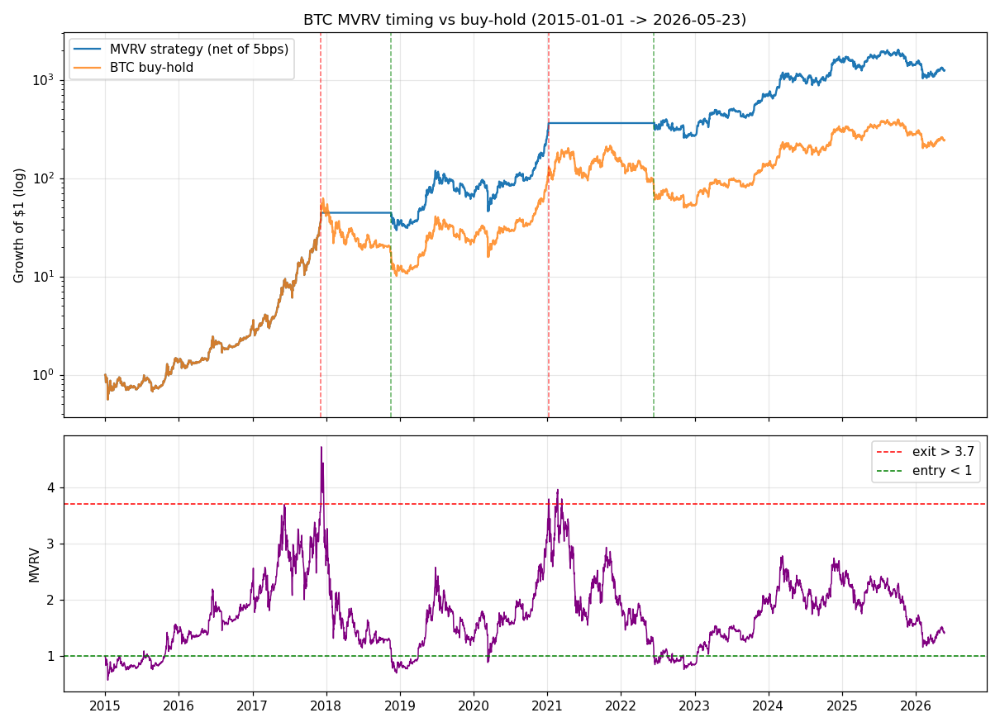

BTC MVRV 估值择时
链上估值锚 MVRV 做的极简择时：极端高位清仓、低位买回 · 11 年 4 笔交易， 累计收益与 Sharpe 双维度跑赢 BTC buy-and-hold · 复核后判难定论
⚪ 2026-09-26 复核：win → 难定论（inconclusive）。
回测结果本身没错，是证据撑不起 win：
- 阈值拟合过它要检验的那个顶。3.7 / 1.0 是 MVRV 指标 2018 年 10 月发表时回看历史顶底定的， 2017 年的顶就在拟合样本里。
- 三分之二的超额来自那一笔。两个来回分别让策略比拿住多攒 2.92 倍和 1.76 倍 BTC， 合 5.13 倍（与 results.json 的 1246.40 / 243.41 = 5.12 倍对得上）；对数超额的 66% 来自 2017 年那一笔。 2018-11 那笔买入之所以存在，正是因为 2017-12 卖出了。
- 真样本外只有一个来回（2021→2022）：多攒 76% 的 BTC。是正的，但 n=1。
- 按原话做会输。这个点子来源的原话是">3.5 分批卖出"。下面"稳健性"一节的参数表里， exit=3.5 那一行 3 格输 2 格；赢的版本用的是 3.7、一次清仓。
- 同家族全灭。hash ribbons、exchange reserve、puell（与 MVRV 同一作者、同一思路）都被杀了。 四个链上估值择时里活下来的这一个，恰好是阈值污染最重的那一个。
- 原判 win 依赖执行途中为它改写的第 6 道门，那个补丁已撤回（见 LESSONS.md 第七节）。
策略是什么
规则极简，测试前预先设定，非事后拼凑：
- 每日看 MVRV：> 3.7 → 清仓持有现金；< 1 → 全仓买入 BTC；1~3.7 之间 → 保持上一状态（hysteresis 防抖动）。
- 首个信号日前默认持有 BTC（注明假设）。
- 执行用信号日收盘价；单边成本 5bps，全仓切换；现金收益记 0（保守）。
- Baseline：同一区间 BTC buy-and-hold，不计成本。
样本：2015-01-01 → 2026-05-23（4161 天），覆盖 2017 顶、2018 熊、2021 双顶、2022 熊、2023–2026 牛市。
Sharpe 按 365 天年化、rf=0（BTC 7×24 交易）。
为什么这样设计
MVRV = 市值 / 已实现市值，衡量全市场 BTC 持有者的平均浮盈倍数。 已实现市值按每枚币上次链上移动时的价格加总——它近似"全市场平均成本"，是个慢变量， 不像价格那样每天被情绪带着跑。
经验规律：MVRV > 3.7 对应牛市顶部区域（全市场浮盈极端，获利抛压将至）； MVRV < 1 对应熊市底部区域（全市场浮亏，卖压枯竭）。 阈值 3.7 取自 Coinglass 对 MVRV 顶底划分的公开概念，在样本内仅出现 22 天—— 这是个"一生几次"的极端信号，天然适合低频择时，而不是频繁交易。
历史对照：2017-12 顶部 MVRV 达 4.4；2021-11 顶部约 2.85（未触发 3.7）； 2018-12 熊底约 0.69；2022-11 熊底约 0.75。阈值落在历史极端值上，不是拍脑袋。
回测结果
| BTC buy-hold | MVRV 策略（扣 5bps） | |
|---|---|---|
| 累计收益 | +24,241.04% | +124,539.98% |
| 超额收益 | — | +100,298.94pp |
| CAGR | 61.98% | 86.95% |
| Sharpe（365 天年化，rf=0） | 0.714 | 1.106 |
| 最大回撤 | −83.78% | −61.45% |
| 交易次数 | — | 4（2 次清仓 + 2 次买入） |

4 笔交易的明细：
| 日期 | 动作 | 成交价 | 当日 MVRV | 事后看 |
|---|---|---|---|---|
| 2017-12-06 | 清仓 | $13,992 | 4.211 | 躲过了 2018 年熊市（提前 11 天卖在顶部前） |
| 2018-11-19 | 全仓买入 | $4,792 | 0.983 | 买在熊底区域（最低 $3,185 在一个月后） |
| 2021-01-07 | 清仓 | $39,216 | 3.742 | 卖早了：错过了之后涨到 $69k 的主升段 |
| 2022-06-13 | 全仓买入 | $22,316 | 0.962 | 买在 Luna / 三箭崩盘周，躲过下半年跌到 $15.7k 的一半 |
关键区间：2022 全年策略 −25.99% vs buy-hold −65.26%（上半年空仓避险，6 月接回后仍吃下半段下跌）； 2017-12→2018 全年策略 +2.76% vs buy-hold −64.77%。 赢的来源主要是第一轮周期的"逃顶+抄底"复利（$13,992 → $4,792 的 BTC 数量放大）， 第二轮周期"卖早"的代价被第一轮的利润垫住了——这是下面要诚实交代的部分。
稳健性与诚实声明
- 11 年只做了 4 笔交易，结果高度集中。统计上这不是"显著性"，是"两次都押对了"。 别把它当成每年可重复的 alpha。最大回撤 −61.45%——策略躲过了 −84% 的 buy-hold 回撤， 但自己依然要吃 −61% 的回撤，拿不住的人等于白测。
- 过不了"剔除 top-3 事件"这道门。字面剔除 3 笔就剩 1 笔——这不是检验失效， 是检验在说：结果整个押在两三次决策上。原稿这里写的是收录门第 6 条的"低频换读法"补丁 （(a) 两个周期都 work、(b) 机制不依赖单事件），那是执行途中为这一条改的门，已撤回： (a) 就是那两笔交易本身，拿来检验自己；(b) 是"为什么应该 work"，不是"work 得稳不稳"。
- 阈值有参数运气成分：事后扫了 exit{3.5, 3.7, 4.0} × entry{0.8, 1.0, 1.2} 共 9 格。 exit=3.7 与 4.0 时 6/6 格双赢（超额 +31k~198k pp，Sharpe 0.875~1.229）； 但 exit=3.5 时 2/3 格输（超额 −441pp、−9,693pp），只有 entry=0.8 的格子赢。 规格里的 3.7 来自 Coinglass 概念而非样本内优化，但它恰好落在"赢的区域"里。
- 2021 年那次是卖早了：MVRV 在 2021-11 顶部只到 2.85，说明 3.7 阈值在"机构化后的 BTC"里可能偏高—— 阈值是否该随周期下调，是未验证的开放问题。
- 执行假设偏乐观：MVRV 本身由当日收盘价算出，现实中信号确认有约 1 天时滞； 回测按信号日收盘直接成交，忽略了这部分滑点。4 笔交易、单边 5bps 已扣，但大资金冲击成本未建模。
- 数据时滞：免费归档更新止于 2026-05-24（约 4 个月时滞），2026 年后半段的牛市尾部不在样本内。
实盘建议
🔴 低 —— BTC 长持者的择时参考，不是独立策略。
- 无统计信心：4 笔交易支撑不起仓位决策，重仓不可。
- 它最适合的角色是"估值闹钟"：MVRV 进入极端区时提醒长持者检查风险，而不是一套自动交易系统。
- 大部分时间它和 buy-hold 完全一样——指望它"每年创造超额"是对这份回测的误读。
数据与代码
- 回测脚本：backtest.py · 结果：results.json · 图表：assets/equity.png
- 数据：coinmetrics/data GitHub 归档（CC BY-NC 4.0），
csv/btc.csv的CapMVRVCur+PriceUSD日频； 概念参考 Coinglass Bitcoin MVRV。 - 假设清单：首日默认持有 BTC；信号日收盘价执行；单边 5bps；现金收益 0；Sharpe 按 365 天年化、rf=0；BTC 7×24 交易故用 365 天。
{kind=link}